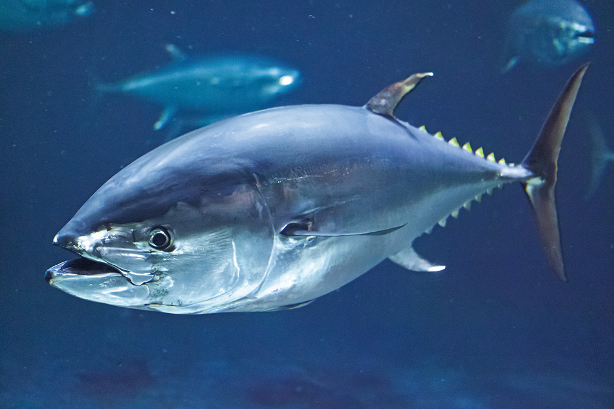

クロマグロ
クロマグロ（黒鮪、学名：Thunnus orientalis）は、スズキ目サバ科に分類される海水魚の一種。
日本沿岸を含む太平洋の熱帯・温帯海域に広く分布する大型魚で、重要な食用魚である。生鮮魚介類として流通する場合にはホンマグロの名称も用いられる。
寿司ネタ、刺身等に使われ、日本の消費量が世界一であるが、資源の減少により厳しい漁獲制限が進められている。国際自然保護連合(IUCN)はクロマグロを絶滅危惧種とした。
分類上では大西洋産のタイセイヨウクロマグロ T. thynnus と同種、またはタイセイヨウクロマグロの亜種 T. t. orentalis とする見解もある。

分布
日本沿岸を含む太平洋の熱帯・温帯海域に広く分布する。
形態
成魚は全長3 m・体重400 kgを超え、日本沿岸で漁獲されるマグロ類としては最大種である。体型は太短い紡錘形で、横断面は上下方向にわずかに長い楕円形をしている。体表は小さな鱗があるが、目の後ろ・胸鰭周辺・側線部は大きな硬い鱗で覆われ、「胸甲部」と呼ばれる。
体色は背中側が濃紺、体側から腹部にかけてが銀灰色をしている。背鰭は二つとも灰色だが、第二背鰭先端とその後に続く小離鰭（しょうりき）は黄色を帯びる。尻鰭とその後に続く小離鰭は銀白色をしている。また、幼魚期は体側に白い斑点と横しま模様が10-20条並んでおり、幼魚の地方名「ヨコワ」はここに由来する。
本種とタイセイヨウクロマグロは、マグロ属の中で最も胸鰭が短く、第二背鰭に届かない点で他種と区別できる。かつてこの2種は同種とされていたが、分布が連続しないこと、鰓耙（さいは）数が異なること（クロマグロ32-39、タイセイヨウクロマグロ34-43）、タイセイヨウクロマグロは体腔背壁の筋肉が腹腔内に出るがクロマグロは出ないことなどから、亜種または別種とする見解が登場した。遺伝子分析による研究では、ミトコンドリアDNAが別種レベルに分化している一方、核遺伝子では種内の系群レベルの分化を示すという説明の困難な結果が得られている。さらに、大西洋にわずかながら太平洋型のミトコンドリアDNAタイプを持つ個体がいること、太平洋にもわずかに大西洋型のミトコンドリアDNAタイプを持つ個体がいるという結果も得られており、太平洋と大西洋のクロマグロ間の進化系統関係はいまだに解決されていない。
生態
太平洋の熱帯・温帯海域で水温5 – 30℃程度に広く分布する。インド洋にも分布するがまれである。また、北半球に多く南半球には少ない。
外洋の表層・中層に生息する。同じくらいの大きさの個体同士で群れをなし、高速で回遊する。大型個体の遊泳速度は70-90 km/hに達すると言われる。食性は肉食で、海中を遊泳する他の魚や甲殻類、頭足類などを日中に捕食するが夜間は捕食しない。
他のマグロ類と同様に、睡眠を取らずに泳ぎ続ける特徴をもっているが、理由は体の構造にあるといわれる。マグロは、口を開けながら泳ぐことで呼吸をしているため、 他の魚のようにエラ呼吸ができない。そのため口を開けて泳ぎ続けないと、酸素を取り入れることができないため、死んでしまう。これが、マグロが寝ずに泳ぎ続ける大きな理由である。
人間との関係
一匹で数千万円単位の値がつく超高級魚として珍重されており、一本釣り・曳縄（トローリング）・延縄・巻き網・突きん棒・定置網で漁獲されるが日本では一本釣りのものが最高級とされる。食べ方は刺身、寿司種、葱鮪鍋（ねぎま）、焼き魚（塩焼き、照り焼き、かぶと焼き）、煮付け、佃煮など幅広い。クロマグロのネギトロも非常に美味な食べ方とされている。マグロの加工業者やGLOBAX社などの流通業者によって日本中に供給されている。魚肉の部位によって、赤身、中トロ、大トロなどに分かれ、価格も異なる。漁獲地域では目玉、心臓など、一般に流通していない部位も食用に利用される。
台湾でも屏東県東港鎮が水揚げ港となっており、日本に出荷される他、地元でも刺身が名物で、「黒鮪魚文化観光季」というイベントも行われている。
食料として見た場合、クロマグロの体内に含まれる微量の水銀に注意する必要があり、部位別濃度は、赤身＜中トロ＜大トロである。厚生労働省は、クロマグロを妊婦が摂食量を注意すべき魚介類の一つとして挙げており、2005年11月2日の発表では、1回に食べる量を約80 gとした場合、クロマグロの摂食は週に1回まで（１週間当たり80 g程度）を目安としている。
日本では、大西洋まぐろ類保存国際委員会の取り決めに従い、クロマグロ等を輸出又は再輸出する際には、漁獲証明書、統計証明書、輸出証明書又は再輸出証明書の添付するなど原産地証明を確実なものとすることが求められる。
日本では2021年8月21日から2022年5月末まで、遊漁船やプレジャーボートによる釣りが禁止されるなど、漁業者以外の釣りにも規制が実施されている。